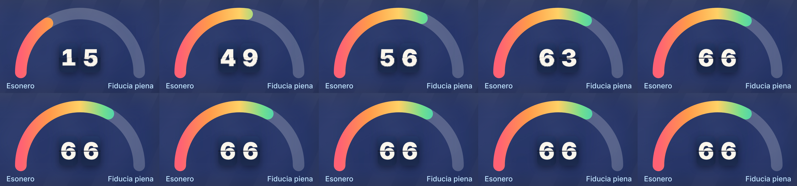
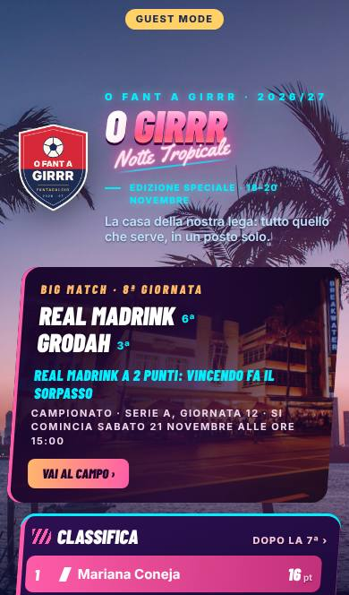
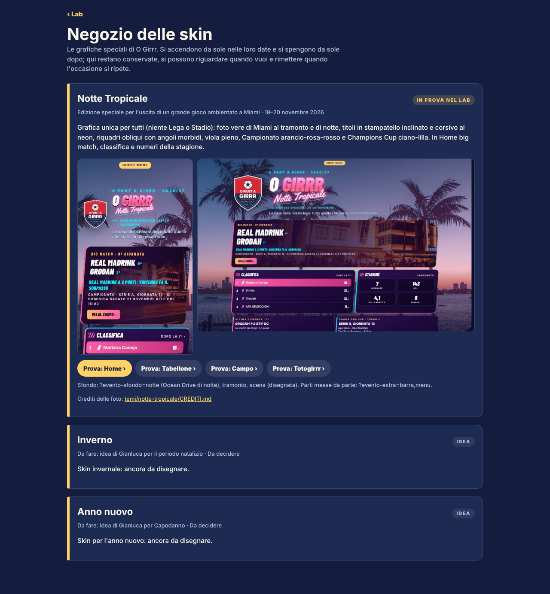

Carriera › SezioniLa pagina resta ferma
Cambiando sezione la pagina tornava su, tremava e il contenuto spariva per un attimo (sul sito vero: invisibile per circa un decimo di secondo, salto di 160 px). Ora l'altezza resta ferma durante il cambio e il nuovo contenuto entra con un rimbalzo morbido, come nel Totogirrr.
Carriera › Fiducia del presidenteCartellini puliti

Sul telefono sopra i cartellini compariva un numero sbiadito e schiacciato (era il numero vero, nascosto, che a ogni scatto si riaccendeva) e le cifre restavano sovrapposte. Ora il numero nascosto resta nascosto, i cartellini hanno il retro coperto anche su Safari e il conteggio sale un po' più calmo.
Carriera e Albo d'oro › PilloleIl colore scivola
Le pillole delle sezioni si comportavano come pulsanti: il colore cambiava di colpo. Ora scivola dalla scelta di prima alla nuova, come in Girrr Sport e nel Tabellone. La fila resta ferma come prima.
Girrr Sport › PilloleNiente sparizioni
Toccando una pillola il contenuto entrava con due animazioni sommate e per un attimo spariva. Ora entra con una sola, morbida. Conferenze stampa non va più in errore se il codice della squadra non è riconosciuto.
Skin speciale · 19–27 novembreNotte Tropicale

Grafica unica per tutti durante l'evento: foto vere di Miami, titoli al neon, riquadri obliqui con angoli morbidi, big match in Home, Campionato arancio-rosa-rosso e Champions Cup ciano-lilla. Si accende e si spegne da sola. Nome e pubblicazione da decidere con Gianluca.
Lab › Negozio delle skinLe skin restano

Ogni skin speciale resta conservata con anteprime e date: si riguarda quando vuoi, si rimette quando l'occasione si ripete, e può tornare da sola ogni anno. Già segnate le idee Inverno e Anno nuovo.